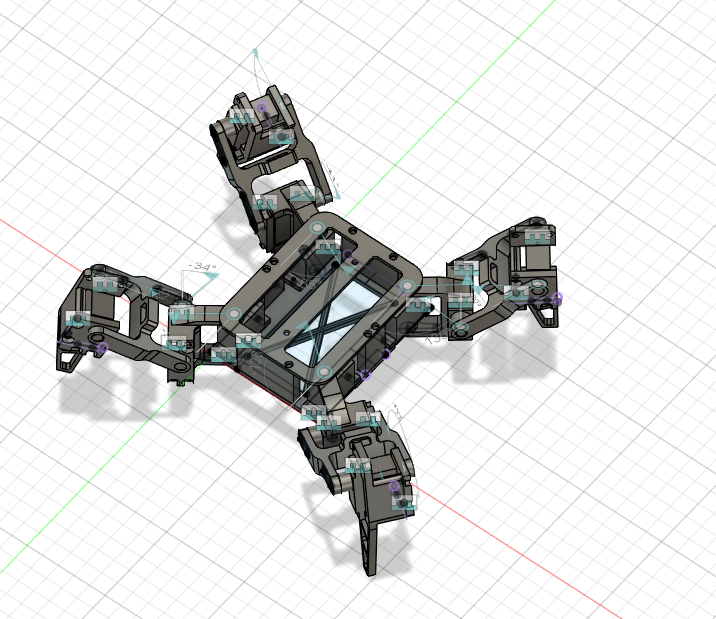

Au cours de l'année 2025, je me suis interressé à la robotique. Un robot araignée m'a semblé être un bon compromis entre difficultée et attractivitée : une gestion de plusieurs pattes pour oeuvrer un mouvement tout en étant naturel
Pour la conception de ce projet, j'ai réalisé toute la conception, du chassis au programme
J'ai commencé par réaliser le chassis du robot, pour cela j'ai commencé par une patte, celle-ci possède 3 articulations : le fémur, le tibia, et le pied
La force est fournie aux pattes grace à des servomoteurs
ensuite j'ai réalisé le chassis central ou est embarqué l'électronique. La principale difficulté à été de réaliser un chassis léger et résistant
L'électronique est consituée d'un microcontrolleur ( arduino nano 33ble cortex arm 32bit , fpu intégré ) ainsi que d'un module de pilotage de servomoteur en I2c
le système est prévu pour supporter le montage d'un batterie lithium ainsi que d'un BMS
Pour la programmation , je suis parti sur la conception d'un moteur en temps réel , que l'arduino 33ble peut très bien gérer grace à sa puissance et sa FPU (unité qui permet de calculer des floats en une seule instruction )
Ce moteur est doté d'un séquenceur ( une table d'animation) qui va ordonner à chaque patte une position orthogonale dans le monde réel (échelle en cm). Ce système de position à été réalisé grace à une méthode s'appellant la cinématique inverse (IK)
cette méthode consiste à calculer chaque angle de rotation des pattes pour les faires parvenir à une position. Une autre fonction permet de déplacer une patte en suivant un courbe de bézier, pour un mouvement plus naturel
En combinant plusieurs séquences de mouvement on peut obtenir des mouvements du robot telle que cette marche :
pour cet exemple, il a suffit de donner seulement 8 instructions de mouvement au moteur pour réaliser une animation de marche
ce projet m'a permis de progresser dans différentes catégories :